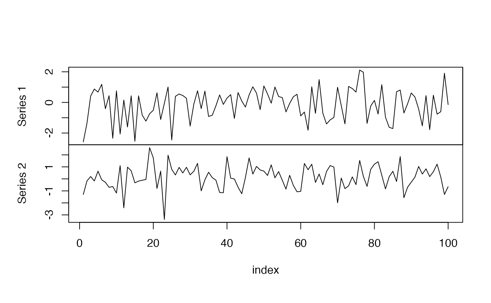
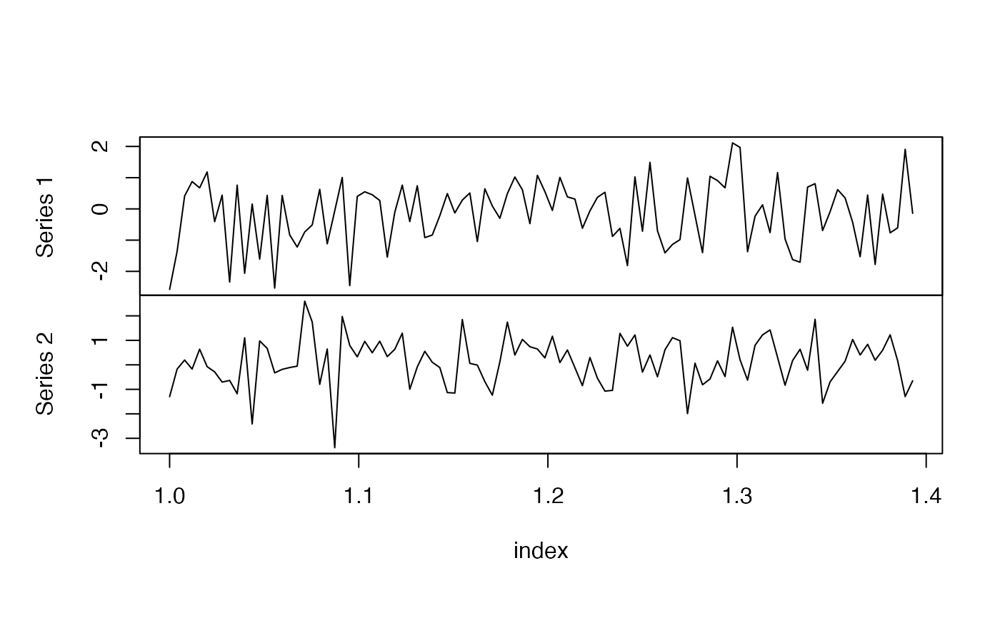

setData.RdsetData constructs an object of yuima.data-class.
get.zoo.data returns the content of the zoo.data slot of a
yuima.data-class object. (Note: value is a list of
zoo objects).
plot plot method for object of yuima.data-class or
yuima-class.
dim returns the dim of the zoo.data slot of a
yuima.data-class object.
length returns the length of the time series in
zoo.data slot of a yuima.data-class object.
cbind.yuima bind yuima.data object.
setData(original.data, delta=NULL, t0=0)
get.zoo.data(x)some type of data, usually some sort of time series.
The function always tries to convert to the input data into an object of
zoo-type. See Details.
an object of type yuima.data-class or
yuima-class.
If there is the need to redefine on the fly the delta increment of the data to make it consistent to statistical theory. See Details.
the time origin for the internal zoo.data slot, defaults to 0.
Objects in the yuima.data-class contain two slots:
original.data:The slot original.data contains, as the
name suggests, a copy of the original data passed to the function
setData. It is intended for backup purposes.
zoo.data:the function setData tries to convert
original.data into an object of class zoo. The
coerced zoo data are stored in the slot zoo.data.
If the conversion fails the function exits with an error.
Internally, the yuima package stores and operates on
zoo-type objects.
The function get.zoo.data
returns the content of the slot zoo.data of x if x
is of yuima.data-class or the content of
x@data@zoo.data if x is of yuima-class.
a list of object(s) of yuima.data-class for
setData.
The content of the zoo.data slot for get.zoo.data
X <- ts(matrix(rnorm(200),100,2))
mydata <- setData(X)
str(get.zoo.data(mydata))
#> List of 2
#> $ Series 1:‘zooreg’ series from 1 to 100
#> Data: num [1:100] -0.2788 -0.0509 0.2417 0.3862 -0.9323 ...
#> Index: num [1:100] 1 2 3 4 5 6 7 8 9 10 ...
#> Frequency: 1
#> $ Series 2:‘zooreg’ series from 1 to 100
#> Data: num [1:100] -0.203 -0.448 1.014 0.785 -1.259 ...
#> Index: num [1:100] 1 2 3 4 5 6 7 8 9 10 ...
#> Frequency: 1
dim(mydata)
#> [1] 2
length(mydata)
#> [1] 100 100
plot(mydata)

# exactly the same output
mysde <- setYuima(data=setData(X))
str(get.zoo.data(mysde))
#> List of 2
#> $ Series 1:‘zooreg’ series from 1 to 100
#> Data: num [1:100] -0.2788 -0.0509 0.2417 0.3862 -0.9323 ...
#> Index: num [1:100] 1 2 3 4 5 6 7 8 9 10 ...
#> Frequency: 1
#> $ Series 2:‘zooreg’ series from 1 to 100
#> Data: num [1:100] -0.203 -0.448 1.014 0.785 -1.259 ...
#> Index: num [1:100] 1 2 3 4 5 6 7 8 9 10 ...
#> Frequency: 1
plot(mysde)
dim(mysde)
#> [1] 2
length(mysde)
#> [1] 100 100
# changing delta on the fly to 1/252
mysde2 <- setYuima(data=setData(X, delta=1/252))
str(get.zoo.data(mysde2))
#> List of 2
#> $ Series 1:‘zoo’ series from 0 to 0.392857142857143
#> Data: num [1:100] -0.2788 -0.0509 0.2417 0.3862 -0.9323 ...
#> Index: num [1:100] 0 0.00397 0.00794 0.0119 0.01587 ...
#> $ Series 2:‘zoo’ series from 0 to 0.392857142857143
#> Data: num [1:100] -0.203 -0.448 1.014 0.785 -1.259 ...
#> Index: num [1:100] 0 0.00397 0.00794 0.0119 0.01587 ...
plot(mysde2)
dim(mysde2)
#> [1] 2
length(mysde2)
#> [1] 100 100
# changing delta on the fly to 1/252 and shifting time to t0=1
mysde2 <- setYuima(data=setData(X, delta=1/252, t0=1))
str(get.zoo.data(mysde2))
#> List of 2
#> $ Series 1:‘zoo’ series from 1 to 1.39285714285714
#> Data: num [1:100] -0.2788 -0.0509 0.2417 0.3862 -0.9323 ...
#> Index: num [1:100] 1 1 1.01 1.01 1.02 ...
#> $ Series 2:‘zoo’ series from 1 to 1.39285714285714
#> Data: num [1:100] -0.203 -0.448 1.014 0.785 -1.259 ...
#> Index: num [1:100] 1 1 1.01 1.01 1.02 ...
plot(mysde2)

dim(mysde2)
#> [1] 2
length(mysde2)
#> [1] 100 100